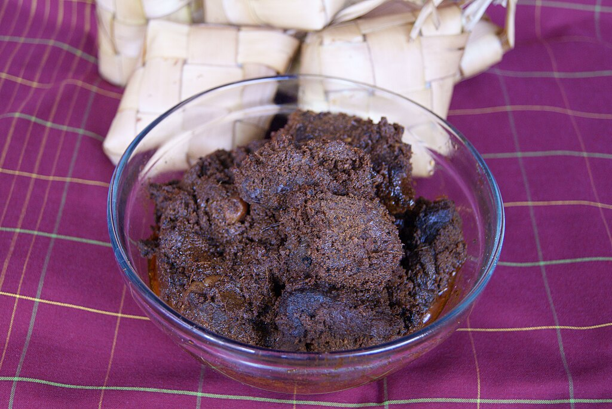

Rendang

Description
Rendang is a deeply flavorful and tender beef stew from the Minangkabau ethnic group in West Sumatra, Indonesia. Known for its rich, complex flavors, rendang is made by simmering beef in coconut milk and a mixture of lemongrass, galangal, garlic, turmeric, ginger, and chilies until the liquid evaporates and the meat becomes tender and infused with the spices.
Ingredients
- Main Ingredients:
- 1 kg beef (preferably chuck or brisket), cut into cubes
- 400 ml coconut milk
- 3 stalks lemongrass, bruised
- 3 kaffir lime leaves
- 2 turmeric leaves (optional)
- Salt to taste
- 3 tablespoons vegetable oil
- Spice Paste:
- 6 shallots
- 4 cloves garlic
- 5-10 dried red chilies (soaked in hot water to soften)
- 2 inches ginger
- 2 inches galangal
- 1 teaspoon ground coriander
- 1 teaspoon ground cumin
- 1 teaspoon ground turmeric
Steps
- Prepare the Spice Paste:
- Blend all the spice paste ingredients (shallots, garlic, soaked dried chilies, ginger, galangal, ground coriander, ground cumin, and ground turmeric) into a smooth paste using a food processor or blender.
- Cook the Spice Paste:
- Heat the vegetable oil in a large pot over medium heat.
- Add the spice paste and cook for about 5-7 minutes, stirring constantly until the paste becomes fragrant and the oil starts to separate.
- Add the Beef:
- Add the beef cubes to the pot and cook until they are browned on all sides.
- Add Coconut Milk and Herbs:
- Pour in the coconut milk.
- Add the bruised lemongrass stalks, kaffir lime leaves, and turmeric leaves if using.
- Bring the mixture to a boil.
- Simmer:
- Reduce the heat to low and let it simmer uncovered, stirring occasionally to prevent sticking and burning.
- Let it simmer for about 2-3 hours until the beef is tender and the sauce has thickened.
- Reduce the Sauce:
- Continue cooking until the sauce has reduced and coats the beef, which may take another hour.
- The final dish should have a thick, dry consistency where the oil separates from the sauce.
- Season:
- Add salt to taste and adjust the seasoning as needed.
- Serve:
- Serve the rendang hot with steamed rice. It can also be served with additional side dishes such as vegetable stir-fries or sambal (spicy Indonesian chili paste).